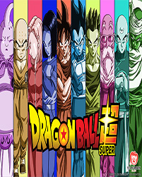
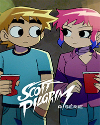
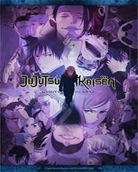
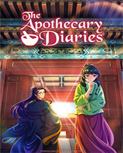

DEMON SLAYER: KIMETSU NO YAIBA
AÇÃO
Japão, era Taisho. Tanjiro, um bondoso jovem que ganha a vida vendendo carvão, descobre que sua família foi massacrada por um demônio. E pra piorar, Nezuko, sua irmã mais nova e única sobrevivente, também foi transformada num demônio. Arrasado com esta sombria realidade, Tanjiro decide se tornar um matador de demônios para fazer sua irmã voltar a ser humana, e para matar o demônio que matou sua família. Um triste conto sobre dois irmãos, onde os destinos dos humanos e dos demônios se entrelaçam, começa agora.

DRAGON BALL SUPER
AÇÃO
Após a derrota de Majin Buu, Goku arranja um novo emprego como... fazendeiro de nabos? Agora que a Terra está em paz, nosso heróis levam vidas mundanas, mas não por muito tempo.
Longe dali, Beerus, o poderoso Deus da Destruição, recebe uma profecia de que encontrará seu fim nas mãos de um ser ainda mais poderoso, e sua busca pelo Deus dos Saiya-jins o traz para a Terra. Será que Goku e seus amigos conseguirão derrotar seu mais poderoso inimigo até então?
TENGOKU-DAIMAKYO: ILUSÃO CELESTIAL
FICÇÃO CIENTÍFICA
O mundo acabou em 2024. Monstros grotescos espreitam entre as ruínas do Japão, enquanto as pessoas que ainda restam se agarram ao que podem para sobreviver. Kiruko, uma faz-tudo de Nakano, aceita o pedido de uma misteriosa mulher à beira da morte para levar um rapaz chamado Maru a um lugar chamado Paraíso. Maru está convencido de que existe lá um rapaz exatamente igual a ele.

SCOTT PILGRIM: A SÉRIE
AVENTURA
Scott Pilgrim conhece Ramona Flowers, a garota dos seus sonhos, mas logo descobre que há sete ex-namorados do mal no meio do caminho.
Houve um homem que conquistou tudo aquilo que o mundo tinha a oferecer, o lendário Rei dos Piratas, Gold Roger. Capturado e condenado à execução pelo Governo Mundial, suas últimas palavras lançaram legiões aos mares. "Meu tesouro? Se quiserem, podem pegá-lo. Procurem-no! Ele contém tudo que este mundo pode oferecer!".
Foi a revelação do maior tesouro, o One Piece, cobiçado por homens de todo o mundo, sonhando com fama e riqueza imensuráveis... Assim começou a Grande Era dos Piratas!
BLEACH: THOUSAND-YEAR BLOOD WAR
AVENTURA
Quando um novo inimigo aparece, o Ceifador de Almas Substituto Ichigo Kurosaki volta ao campo de batalha com sua Zanpakuto para ajudar os necessitados.
Eren avança para o Forte com inúmeros outros titãs. Diante dos refugiados à beira do desespero, aparecem Mikasa, Armin, Jean, Connie, Reiner, Pieck e Levi, que escaparam por um triz do Rugido da Terra. Esta é a conclusão da batalha de Eren contra seus antigos companheiros e amigos de infância.

JUJUTSU KAISEN
AVENTURA
Acompanhe o jovem Yuji Itadori nesta história de ação sombria e sobrenatural, enquanto ele treina as perigosas artes dos Feiticeiros Jujutsu e explora o violento mundo das maldições! Yuji Itadori come um dedo amaldiçoado para salvar um colega de turma e agora Ryomen Sukuna, um terrível e poderoso feiticeiro conhecido como o Rei das Maldições, habita na alma de Itadori.
Quando os sete robôs mais avançados do mundo e seus aliados humanos são assassinados um a um, o Inspetor Gesicht logo descobre que também está em perigo.

DIÁRIO DE UMA APOTECÁRIA
DRAMA
Maomao levava uma vida tranquila ao lado de seu pai, um boticário renomado. No entanto, sua vida muda da noite pro dia quando ela é vendida como uma simples serva no palácio do imperador. Incapaz de se adaptar à vida na realeza, Maomao decide tomar medidas drásticas quando os herdeiros imperiais adoecem, embarcando numa missão para encontrar a cura. Sua audácia chama a atenção de Jinshi, um belo funcionário do palácio que decide apoiá-la. Agora, Maomao se envolve em intrigas médicas enquanto sua fama se espalha pelos corredores do palácio!